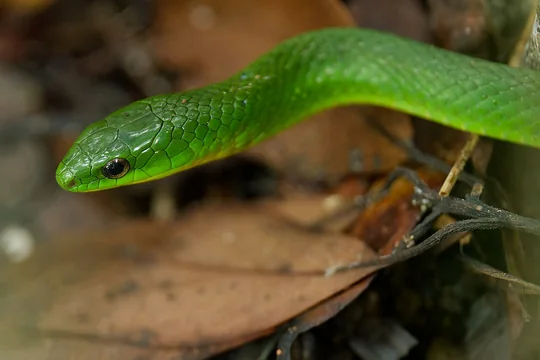
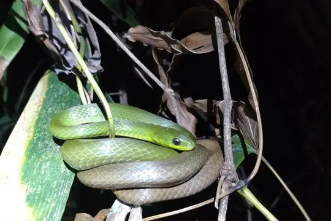
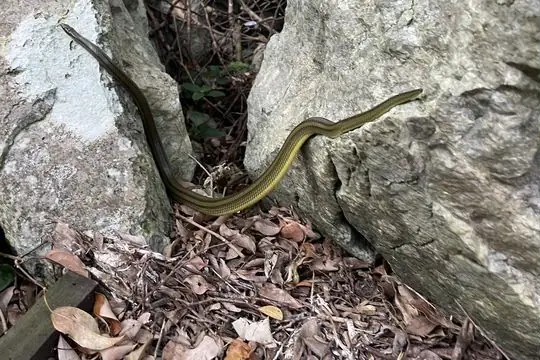
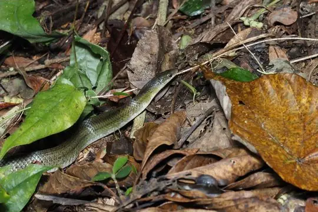
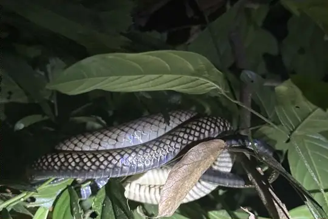
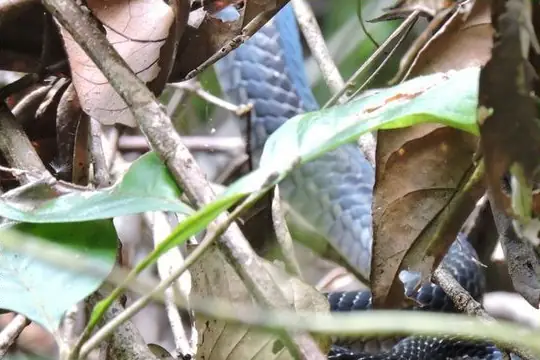

Ptyas
The genus Ptyas (family Colubridae) has 13 species in SnakeList (none venomous), recorded in 19 countries.
- 13species
- 13non-venomous
- 19countries
About the genus
A genus of the family Colubridae (colubrids).
Species
Showing 13 species
 Black-striped Rat SnakePtyas dhumnades
Black-striped Rat SnakePtyas dhumnades- No photo yetDoria's Green SnakePtyas doriae

Greater Green SnakePtyas major Green Rat Snake (nigromarginata)Ptyas nigromarginata
Green Rat Snake (nigromarginata)Ptyas nigromarginata Indo-Chinese Rat SnakePtyas korros
Indo-Chinese Rat SnakePtyas korros Keeled Rat SnakePtyas carinata
Keeled Rat SnakePtyas carinata
Many-banded Green SnakePtyas multicincta Oriental RatsnakePtyas mucosa
Oriental RatsnakePtyas mucosa
Ryukyu Green SnakePtyas semicarinata
Sakishima Green SnakePtyas herminae
Smooth-scaled Mountain Rat SnakePtyas luzonensis
Sulawesi Black RacerPtyas dipsas White-bellied Rat SnakePtyas fusca
White-bellied Rat SnakePtyas fusca
No snakes in Ptyas match.
About the genus Ptyas
- Family: Colubridae.
- Recorded in: Afghanistan, Bangladesh, Bhutan, Cambodia, China, India, Indonesia, Japan, Laos, Malaysia, Myanmar, Nepal, Pakistan, Philippines, Singapore, Sri Lanka, Taiwan, Thailand, Vietnam.